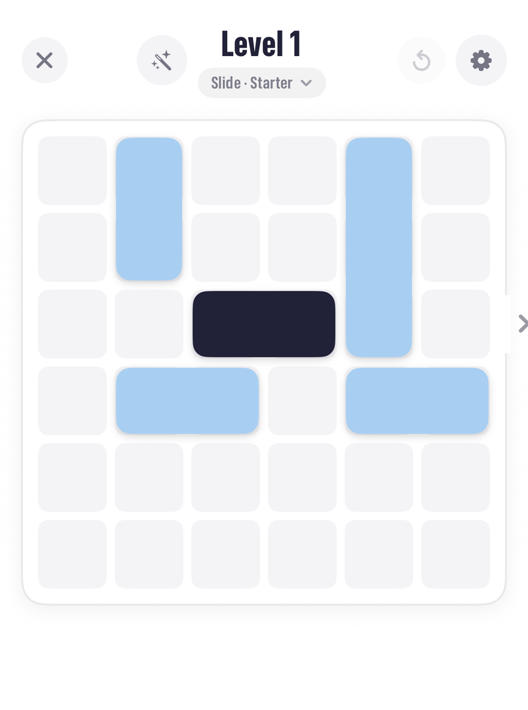
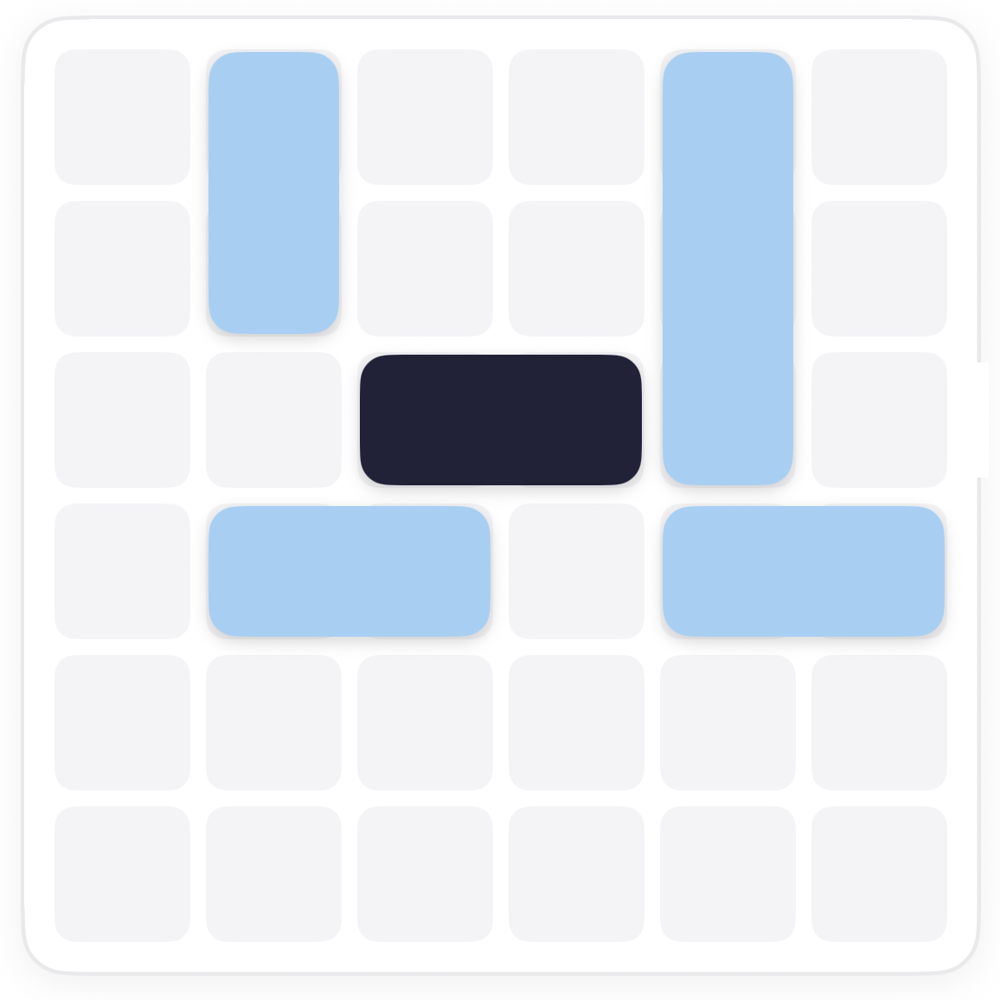
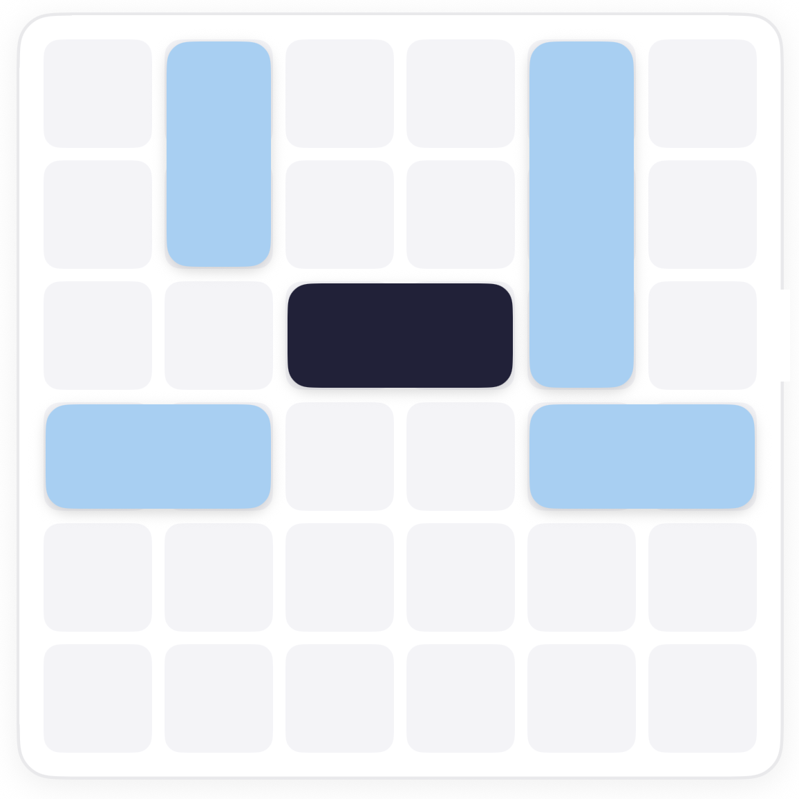
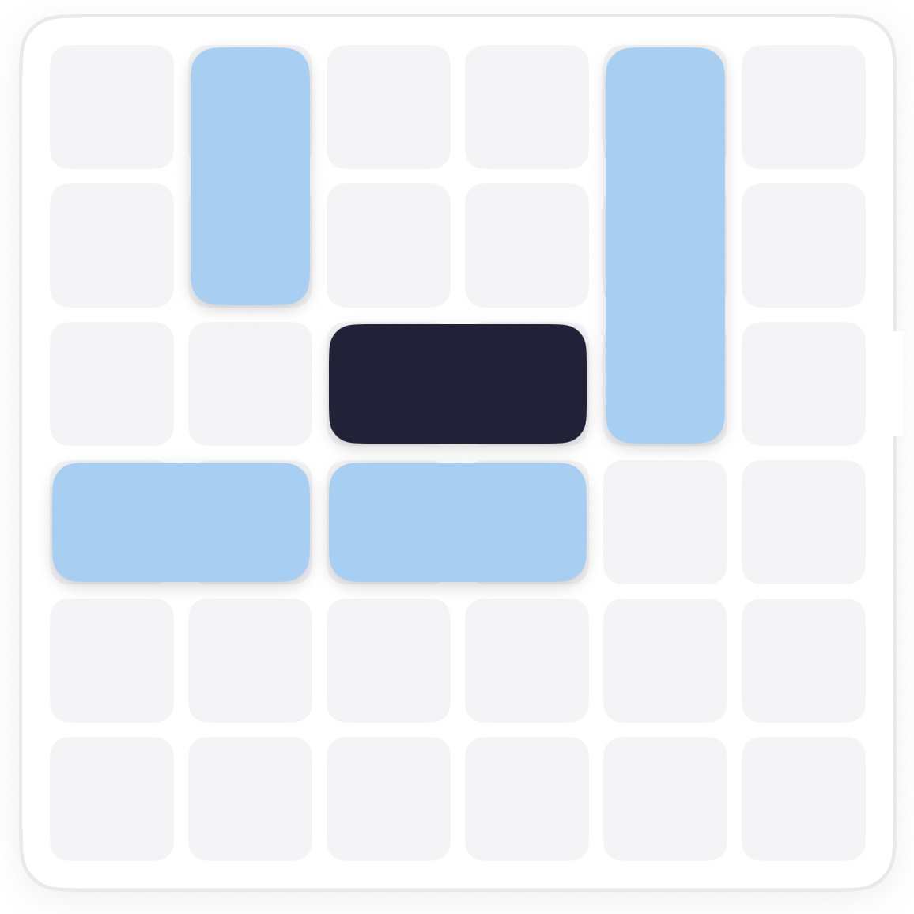
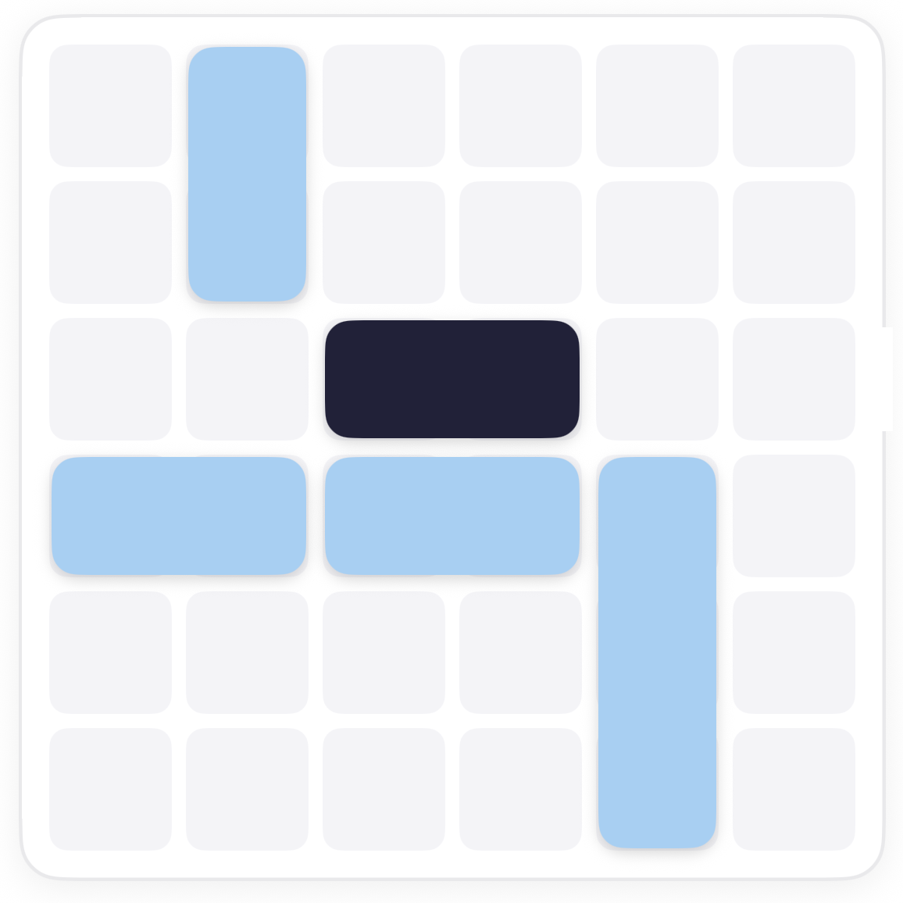
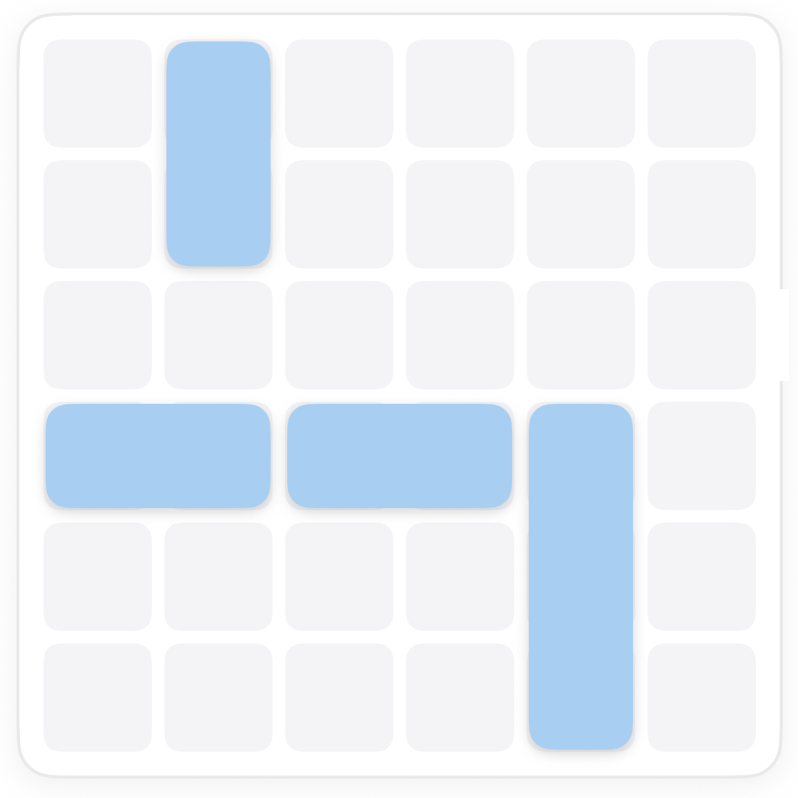

How to play Slide Scoot.
Slide is Scoot on ice. You do not drag a block to a spot; you push it, and it glides until a wall or another block stops it. Where a block ends up depends on what is in its way, so the order of pushes is the puzzle.
The board.
The dark block on the third row, the notch on the right, and pale blue ice blocks around it: two tall ones, one three-long tower on the exit row, and two wide ones on the row below.

The rule.
There is no stopping halfway. If you need a block to end up in the middle of its lane, something has to be there to stop it.
Clear the lane, in order.
The tall block on the exit row has to drop out of the way, but it can only slide down as far as the wide blocks beneath it allow. So those move first, and where they stop decides everything.





Common questions.
Can a block slide off the board?
No. The walls stop everything, and only the dark block can leave, through the notch.
What if a block stops in the wrong place?
Undo the push. Then look for something to stand in its way first, so the next push stops where you need it.